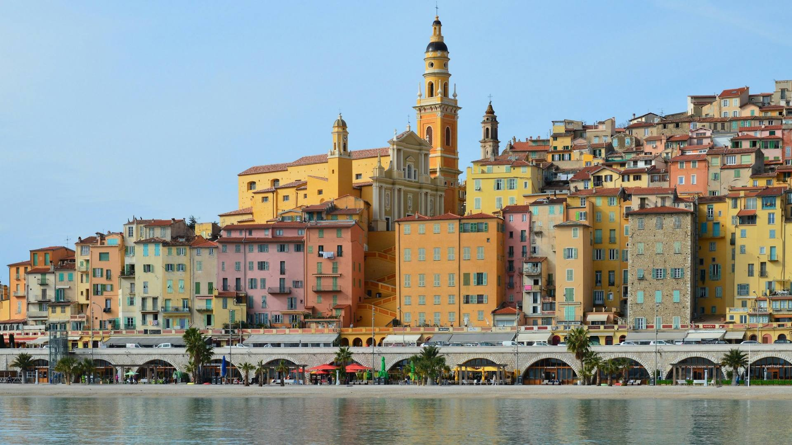

Things to do on the French Riviera in winter
Fewer crowds, beautiful light and the great February festivals: winter is the connoisseurs’ favourite season for discovering the Riviera.
Photo: Slim Mars / Unsplash
Here is the calendar of the big winter 2027 festivals and our ideas for days out, all reachable by train from Nice or Cannes.
Dates for your diary
- 27 Nov-3 JanChristmas markets in Nice, Cannes and Monaco
Christmas villages in the Jardin Albert-Ier, on the Allées de la Liberté and at Port Hercule (Monaco from 4 December).
- 22-31 JanMonte-Carlo International Circus Festival
The 49th edition under the Fontvieille big top; booking essential.
- 9-28 FebNice Carnival "Long Live Love"
Parades, illuminated processions and flower battles on Place Masséna and the promenade.
- 10-14 FebMimosa Festival in Mandelieu-La Napoule
Flower parades, festivities and the Mimosa Route in full bloom.
- 13-28 FebMenton Lemon Festival
Citrus sculptures in the Biovès gardens and parades on Sundays 14, 21 and 28 February.
February festivals
The coast’s three big festivals follow one another in February: book your accommodation early.


In the sun, by the sea
Pleasant walks even in January, when the sky is clear.


Quiet villages and museums
In winter, the hilltop villages get their peace back.


Skiing 90 minutes from the sea
Isola 2000 and Auron, the Alpes-Maritimes resorts, open in early December: a ski day out from Nice or Cannes.
Tours and activities
Book online in minutes, with free cancellation on most activities and traveller reviews to help you choose.
-
Nice Carnival and winter festivals
Grandstand seats and trips to Menton and Mandelieu.
-
French Riviera day trips
Guided days between Nice, Èze and Monaco.
Affiliate links: if you book, Clic&Site earns a commission at no extra cost to you. Prices and availability are set by the booking platform.
Frequently asked questions
When is the 2027 Nice Carnival?
From 9 to 28 February 2027, on the theme "Long Live Love".
When is the 2027 Menton Lemon Festival?
From 13 to 28 February 2027, with golden fruit parades on Sundays 14, 21 and 28 February.
Is the weather good on the French Riviera in winter?
Days are often sunny and mild, but evenings are cool: bring a warm jacket.